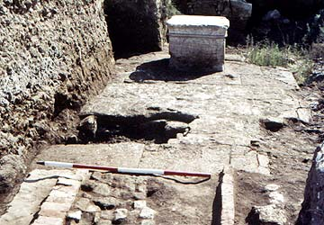

|
The
cemetery is the oldest feature yet found at El-Ashmunein. It was
enclosed by a massive wall of sun-dried brick with a sloping exterior
face, which was the first feature to be uncovered by excavation. The
tombs inside consisted of small brick vaulted chambers, originally
with a rectangular brick-built superstructure above. As the
cemetery became overcrowded, new graves were cut into older ones
and additional burials were dug into the top of the enclosing wall.
|
|
|
The
burials were not particularly rich and were in a poor state of preservation
owing to moisture and salts in the ground, but there was evidence
for some having been enclosed in painted wooden coffins. The bodies
were laid in an extended position on the left side. Offerings in
the form of pottery jars typical of the period were found around
the tombs.
The British
Museum expedition was successful in discovering one of the main
streets through the city, known as The Dromos of Hermes,
which functioned for at least 200 years from the first century BC.
Previously, the existence of this street had been known only from
references in ancient papyrus documents. Parts of the street, paved
with fine slabs of white limestone, were found in the excavations
of 1982-84 buried under more than two metres of later deposits.
Of particular interest was the discovery that the street had been
decorated with much older monuments, an altar of calcite with carved
scenes and inscriptions of King Amenhotep III (c.1370 BC) being
found set into the middle of the paving
.
|

|
|
This
altar had been removed from the New-Kingdom temple at the site and
re-used in the Graeco-Roman street over a thousand years later.
The Dromos of Hermes ran over the levelled remains of earlier
temples of the god Thoth, from the ruins of which came numerous
pieces of sculpture and relief carving dating chiefly from the New
Kingdom and Third Intermediate Period. The Dromos ran approximately
north - south through the middle of the city and formed an intersection
with another street, known as Antinoe Street in the papyri,
which ran from west to east. The crossroads was once marked by monumental
pillars which probably supported statues of Roman emperors.
|
 |